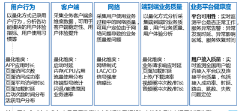

业务质量测试工具（SQI Tools）
什么是SQI
SQI是新一代OTS 工具产品族，以客户端、SDK、组件多种形式为业务质量测试和网络测试提供质量数据采集手段。
1）SQI-Tools是面向业务质量、网络测试的系列工具，实现以“用户”为中心的端到端业务质量评测，具备基础通信网络性能、用户体验、终端性能、业务质量评测等功能，支持Android、iOS、windows、linux多个平台。
2）SQI-SDK是面向互联网应用开发商提供的轻量级SDK开发包，能够在用户无感知状态下实现业务质量及用户行为等多维度的信息采集。支持Android、iOS操作系统。
3）SQI Plug-in 为基于HTML5页面的第三方应用提供标准化接口, 实现HTML5页面与SQI SDK之间的交互，能够在用户无感知状态下实现业务质量及用户行为等多维度的信息采集。
主要功能
网速测试、网站测试、切换分析、CSFB测试、终端测试、DNS测试、路由测试等
采集数据

适用场景
可用于4G用户体验评测、终端综合性能评估；以及满足互联网应用业务质量评测、日常运营数据采集等监测需求
部署方式
服务策略
……